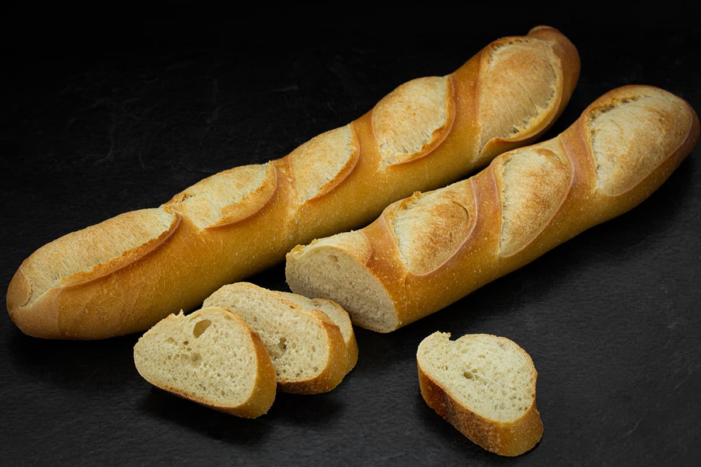
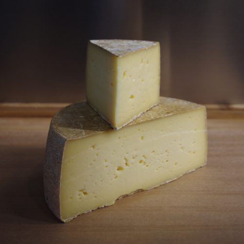
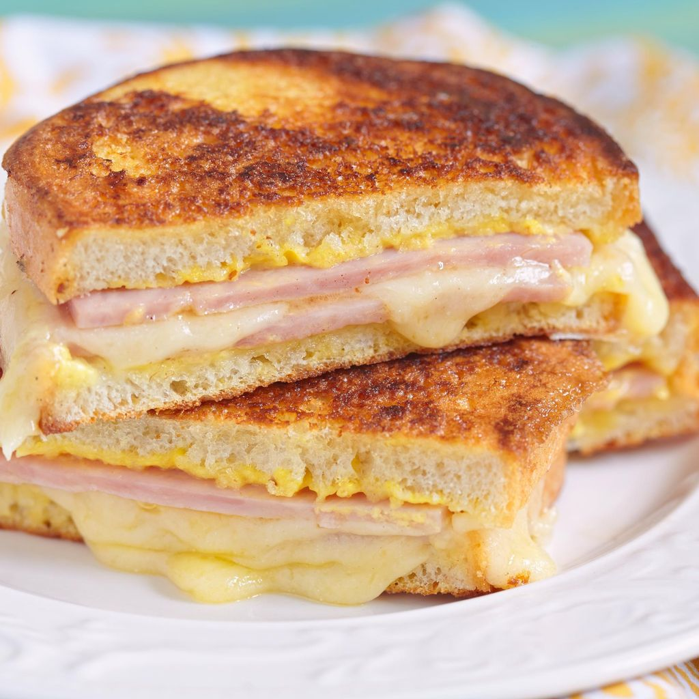

Mon voyage parfait: Paris

Description de Paris:
Paris, la capitale de la France, est la quatrième plus grande ville de l’Union européenne. Centre mondial de l’art, de la mode, de la gastronomie et de la culture, la ville est traversée par de larges boulevards et le fleuve de la Seine. Au-delà de ses monuments historiques tels que la tour Eiffel et la cathédrale Notre-Dame, la ville est également connue pour sa culture des cafés et ses boutiques de créateurs.
Sites intéressants à propos de Paris:
- https://www.france.fr/fr/destination/paris/ (exemples des places populaires à voir en visitant Paris)
- Plus de sites à trouver...
Mets populaires de Paris:
|
Image des mets |
|
 |
|
 |
|
 |